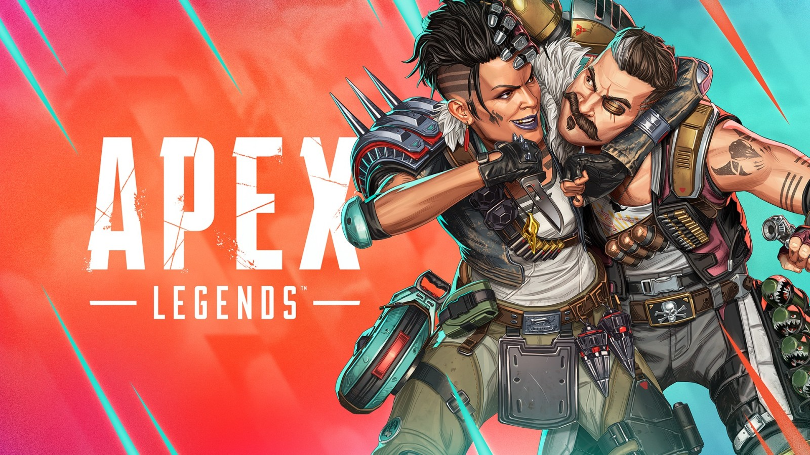

Gaming | 🏆 TOP 5 SHOOTERS DEL 2025
Publicado por CodeMasters — 2025

🥇 Top 1 — Call of Duty: Warzone
Warzone sigue dominando en 2025 gracias a sus constantes
actualizaciones, nuevos mapas y eventos en vivo. Su jugabilidad
rápida, el realismo de las armas y la enorme comunidad lo mantienen
como el shooter más jugado y competitivo del momento.

🥈 Top 2 — Fortnite
Fortnite se mantiene fuerte en 2025 por su capacidad de reinventarse.
Nuevas temporadas, colaboraciones, modos creativos y eventos únicos
hacen que siempre haya algo nuevo que jugar. Es accesible, divertido y
muy popular.

🥉 Top 3 — Valorant
Valorant continúa creciendo en el ámbito competitivo. Su enfoque
táctico, agentes con habilidades únicas y el fuerte apoyo a los
eSports lo convierten en uno de los shooters más importantes del año,
especialmente en PC.

🎯 Top 4 — Counter-Strike 2
CS2 mantiene la esencia clásica de la saga con mejoras gráficas y
técnicas. Sigue siendo uno de los shooters más exigentes y respetados,
ideal para jugadores que buscan habilidad pura y competencia seria.

🔫 Top 5 — Apex Legends
Apex Legends sigue siendo relevante en 2025 gracias a su movilidad,
personajes carismáticos y jugabilidad rápida. Aunque compite fuerte
con otros battle royale, sigue teniendo una comunidad fiel.